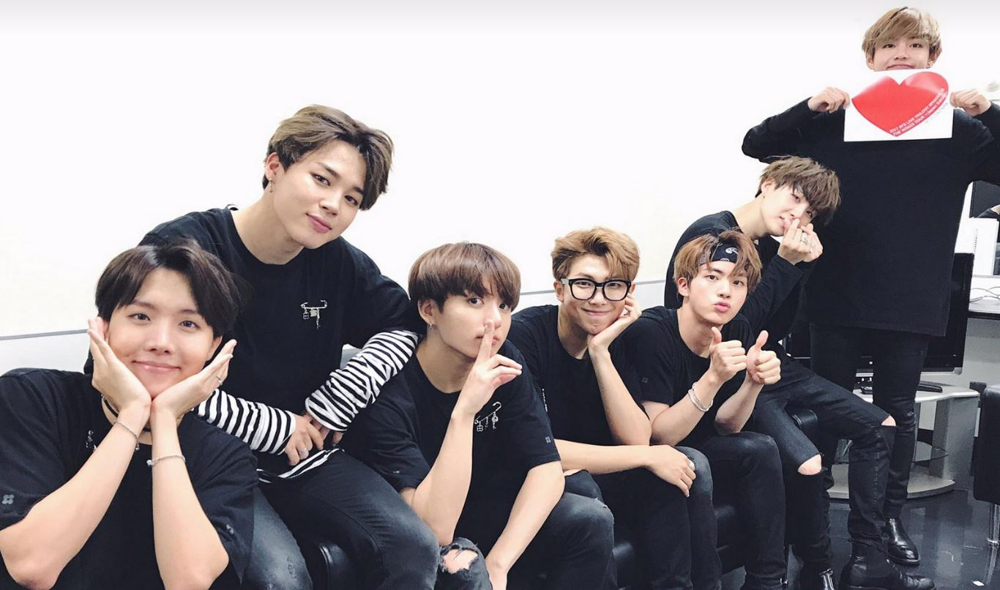

Introduction
While I do like drawing and making art, I like music, too. One of the bands I listen to is BTS. BTS is a seven-member Korean boyband that debuted in 2013. Unlike the boybands in America, they incorporate a lot of dance into their music videos. Their music is mostly based on the struggles of life, growth as a person, and society's expectations; they also have the cliche love album, as well. They have kind hearts and amazing personalities, along with great voices, too! They've worked super hard for their fans, and are trained in a lot of things. Like a lot of K-Pop idols, they're trained to sing while dancing, and their live performances sound amazing. For a guide to their MUSIC, and how it looked or listened like through out the years, go to this ---> Link <---. The video below is one of their recent music videos. This is a remix version of their song Mic Drop from the Love Yourself: Her album with Steve Aoki. They made another version of Mic Drop with Desiigner, a known rapper. Although there is no music video with the Desiigner version, it is available on itunes, spotify, and you can find the audio on Youtube. There's also a Japanese version. In a nutshell, Mic Drop has 4 versions: the Original (in Korean), Japanese, Steve Aoki (English and Korean), Steve Aoki and Desiigner (English and Korean). Watch the video with CC on.
This is a dance practice of their song "Fire". You can hear them trying to catch their breath at the end.
Here they are in order from left to right: J-Hope, Jimin, Jungkook, RM, Jin, Suga, and V.
